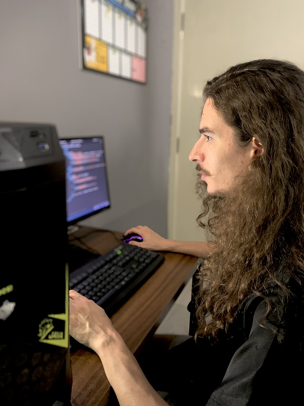

Olá, eu sou o
Ruan Flores.
Dev Front End Júnior

Sobre mim
Sou a pessoa a quem meus pais recorrem quando precisam de ajuda com o celular, e também aquele que os meus irmãos e amigos pedem conselho na hora de comprar um computador com um bom hardware. Aliás, boa parte do que sei de hardware, aprendi com um amigo de infância, quando nós ainda éramos adolescentes. Desde cedo, eu tenho uma paixão por computadores e sempre quis, ainda garoto, "criar sites".
Inicialmente, me formei em Comunicação Social, mas como sempre fui curioso e ávido por aprender novas funções, iniciei uma jornada de transição de carreira. Concluí minha segunda faculdade em Análise e Desenvolvimento de Sistemas, buscando novas oportunidades e aprendizados na área de desenvolvimento, em particular no Front-End, aproveitando a minha experiência anterior com o usuário/cliente.

Nessa caminhada, pensei em adotar algum nome característico, que assinasse os meus trabalhos acadêmicos e profissionais. Pra quem não sabe, meu sobrenome é Flores, e pensando nessa jornada de constante busca por conhecimento, evolução e amadurecimento, surgiu o nome "sproutjourney". A "jornada da semente". Uma jornada que começa do zero, como alguém totalmente novo em um determinado assunto, mas que vai se desenvolvendo a cada dia que passa, criando raízes e se solidificando, para dar frutos no futuro.